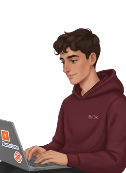

Chief of Staff / Founder Associate
22 anni · Milano
Partito 4 anni fa nel mondo startup, poi passato al VC per imparare come si raccoglie capitale, ora di nuovo dal lato di chi costruisce.

01 / Chi sono
Negli ultimi 4 anni ho lavorato lato startup e nel venture capital: ho costruito da zero la piattaforma di portfolio di un fondo, organizzato eventi tech in tutta Italia e seguito progetti dal problema iniziale al primo setup commerciale. Cerco un ruolo a fianco di un CEO, in una startup che scala.
02 / Portfolio
03 / Studi